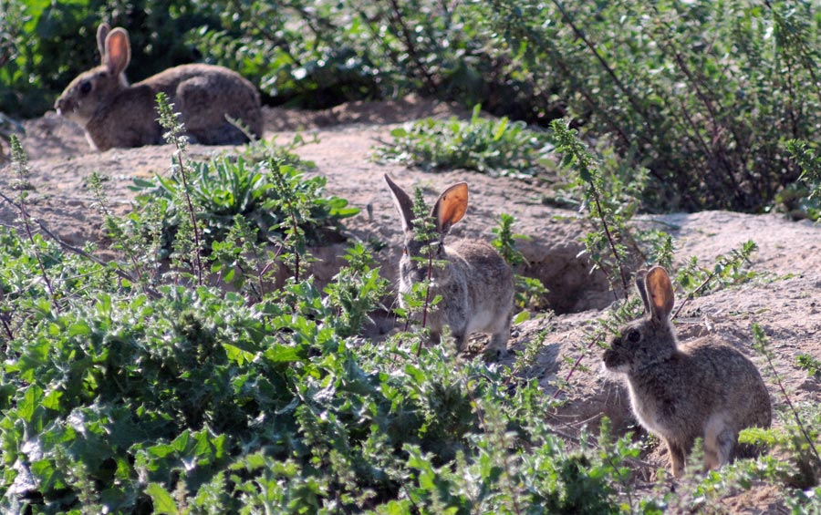
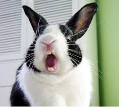

Los conejos son mamíferos lagomorfos (diferentes a los roedores) que pertenecen a la familia Leporidae. Existen más de 30 especies silvestres distribuidas por todo el mundo, aunque la más conocida es el
Oryctolagus cuniculus
o conejo europeo, que dio origen a la mayoría de las razas domésticas actuales.
Los conejos son mamíferos lagomorfos (diferentes a los roedores) que pertenecen a la familia Leporidae. Existen más de 30 especies silvestres distribuidas por todo el mundo, aunque la más conocida es el
Oryctolagus cuniculus
o conejo europeo, que dio origen a la mayoría de las razas domésticas actuales.
Se caracterizan por tener un cuerpo compacto, patas traseras fuertes para saltar, orejas largas que les permiten detectar sonidos lejanos, y una cola corta. Son animales muy adaptables y pueden vivir en praderas, bosques abiertos, zonas agrícolas e incluso áreas suburbanas, siempre que encuentren alimento y lugares seguros para esconderse o excavar.
Tienen hábitos crepusculares o nocturnos, siendo más activos al amanecer y al anochecer. Son silenciosos, muy alertas y con una excelente visión periférica. Forman madrigueras subterráneas llamadas vivares, donde viven en grupos jerarquizados. Además, los conejos tienen una inteligencia notable: pueden reconocer rutas, recordar espacios y desarrollar vínculos sociales, tanto con otros conejos como con humanos.
Importancia ecológica y conservación
El conejo europeo es una especie clave en el ecosistema mediterráneo. Su presencia influye directamente en el equilibrio de la biodiversidad. Es la principal presa de muchos depredadores en peligro, como el lince ibérico y el águila imperial. Su actividad como herbívoro regula la vegetación, y su costumbre de excavar mejora la calidad del suelo, facilitando la infiltración de agua y la germinación de plantas.
 No obstante, su población ha disminuido drásticamente en las últimas décadas. Las principales causas son:
- Pérdida y fragmentación del hábitat por agricultura, urbanización y ganadería intensiva.
- Propagación de enfermedades como la mixomatosis y la enfermedad hemorrágica vírica, que han causado mortalidades masivas.
- Competencia con especies invasoras y disminución de zonas de refugio seguras.
En lugares de Europa, cómo España, el conejo está en la Lista Roja de Especies Amenazadas , lo que ha motivado planes de conservación enfocados en su recuperación, incluyendo la protección de vivares, programas de vacunación y reintroducción en zonas críticas.
Curiosidades
- Sus dientes nunca dejan de crecer. Por eso necesitan roer constantemente para desgastarlos de forma natural.
- Pueden correr hasta 50 km/h en distancias cortas y cambiar de dirección rápidamente para escapar. Vídeo
- Son animales muy limpios: se acicalan varias veces al día, como los gatos.